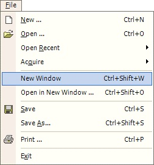
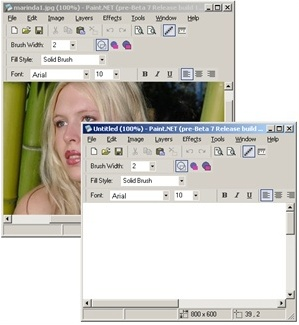

New Window
|  The New Window Operation (File-->New Window) opens up a new instance of Paint.NET. This new instance of Paint.NET will have a clean canvas, with no history. The New Window Operation is very similar to the Open in New Window Operation. |
|  This is an example of doing a New Window Operation while another image is currently being edited. In this example, the user was not required to stop editing and close the current image before starting work on another image. Separate images can be worked upon concurrently. |